특수용접기능사 (2004-02-01 기출문제)
1과목: 용접일반
1. 고장력강용 피복아크 용접봉에서 철분 저수소계 피복제 계통은 다음 중 어느 것인가?
- 5826
- 5316
- 5003
- 5001
(정답률: 38%)

2. 청색의 겉불꽃에 둘러싸인 무광의 불꽃이므로 육안으로는 불꽃 조절이 어렵고, 납땜이나 수중 절단의 예열 불꽃으로 사용되는 것은?
- 산소 - 수소 가스 불꽃
- 산소 - 아세틸렌가스 불꽃
- 도시가스 불꽃
- 천연가스 불꽃
(정답률: 85%)
3. 구리와 아연을 주성분으로 한 합금이며 철강이나 비철금속의 납땜에 사용되는 것은?
- 구리납
- 인동납
- 은납
- 주석납
(정답률: 44%)
4. 용접봉 홀더가 K.S 규격으로 200호 일 때, 용접기의 정격 전류로 맞는 것은?
- 100[A]
- 200[A]
- 400[A]
- 800[A]
(정답률: 86%)
5. 가스 압력 조정기 취급시 주의사항 설명으로 틀린 것은?
- 압력 조정기 설치구에 있는 먼지를 불어내고 설치할 것
- 조정기를 견고히 설치한 다음, 조정 핸들을 조이고 밸브를 조용히 열 것
- 설치 후 반드시 비눗물로 점검할 것
- 취급시 기름 묻은 장갑 등을 사용하지 말 것
(정답률: 68%)
6. 가스 가우징에 대한 설명 중 옳은 것은?
- 용접홈을 가공하기 위한 작업 방법이다.
- 드릴작업의 한 가지 방법이다.
- 저압식 토치의 압력 조절 방법의 일종이다.
- 가스의 순도를 조절하기 위한 방법이다.
(정답률: 73%)
7. 땜납을 인두에 녹였을 때, 색깔이 회색으로 변하였다. 가장 타당한 이유는?
- 인두의 온도가 너무 높다.
- 용제가 적다.
- 인두의 온도가 너무 낮다.
- 용제가 인두에 많이 묻었다.
(정답률: 59%)
8. 용접물에 대한 비파괴 시험법이 아닌 것은?
- 초음파 시험
- 자기적 시험
- 방사선 시험
- 크리프 시험
(정답률: 79%)
9. 강재의 절단부분을 나타낸 그림이다. ①, ②, ③, ④의 명칭이 틀린 것은?
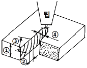
- ① : 판두께
- ② : 드래그(drag)
- ③ : 드래그라인(drag line)
- ④ : 피치(pitch)
(정답률: 68%)
10. 용접 전길이에 대해서 각층을 연속하여 용접하는 방법으로, 한랭시나 구속이 클 때 판두께가 두꺼울 때에는 첫층에 균열이 생길 우려가 있는 용착법은?
- 대칭법
- 블록법
- 빌드업법
- 캐스 케이드법
(정답률: 59%)
11. 피복아크 용접봉에서 아크 길이 및 아크 전압을 설명한 것 중 맞지 않는 것은?
- 아크 길이가 너무 길면 아크가 불안전하다.
- 양호한 용접을 하려면 짧은 아크를 사용한다.
- 아크 전압은 아크 길이에 반비례 한다.
- 아크 길이가 적당할 때, 정상적인 작은 입자의 스패터가 생긴다.
(정답률: 66%)
12. 가스용접 토치를 크게 3부분으로 나눌 때, 3부분에 해당되지 않는 것은?
- 손잡이(torch body)
- 혼합실(mixing chamber)
- 코일스프링(coil spring)
- 팁(tip)
(정답률: 54%)
13. 모재의 용접면을 청소하는 데, 잘못된 사항은?
- 용접면에 녹이 있으면 깨끗이 제거 후 용접한다.
- 브러시, 그라인더, 숏 블래스트 등을 사용하여 청소 한다.
- 수분이나 기름기의 청소는 버너 등으로 태워 버릴 수 있다.
- 홈 가공면 중 가스 가공한 면은 오래 두어도 녹이 나지 않는다.
(정답률: 54%)
14. 용접 변형 방지법 중 용접 전에 방지대책을 강구하는 방법은?
- 스킵법
- 후퇴법
- 역변형법
- 대칭법
(정답률: 71%)
15. 시험편을 인장 파단시켜 항복점(또는 내력), 인장강도, 연신율, 단면 수축율 등을 조사하는 시험법은?
- 경도시험
- 굽힘시험
- 충격시험
- 인장시험
(정답률: 62%)
16. 다음 중 비파괴 시험에 속하는 것은?
- 인장시험
- 화학시험
- 침투시험
- 균열시험
(정답률: 63%)
17. p는 하중(㎏f), d는 피라밋 자국의 표면적일 때, 비커즈 경도시험 산출 기본공식(Hv)으로 다음 중 옳은 것은?
- 1.1×(p/d)
- 1.854×(p/d2)
- 1.1×(p/d2)
- 1.854×(d2/p)
(정답률: 58%)
18. 용접봉 지름1.0∼1.6㎜, 용접 전류30∼45 [A]의 아크 용접에 사용하는 차광유리의 차광도 번호는?
- 7
- 10
- 12
- 14
(정답률: 48%)
19. 피복 아크용접시 슬랙(slag)을 제거할 때, 안전사항에 가장 위배되는 것은?
- 가능한 한 눈을 가까이 접근시켜 제거한다.
- 보호안경을 쓰고서 하는 것이 좋다.
- 슬래그 해머를 사용한다.
- 와이어 브러시를 사용한다.
(정답률: 90%)
20. 내식성을 필요로 하며 고도의 기밀, 유밀을 필요로 하는 내압용기 제작에 가장 적당한 용접법은?
- 아크 스터드 용접
- 일렉트로 슬래그 용접
- 원자 수소 아크 용접
- 아크 점용접
(정답률: 35%)
21. MIG용접의 기본적인 특징이 아닌 것은?
- 대체로 모든 금속의 용접이 가능하다.
- 스패터 및 합금성분의 손실이 적다.
- 아크가 안정되므로 박판 용접에 적합하다.
- 용착금속의 품질이 높다.
(정답률: 53%)
22. 아크용접에 비교한, 가스용접의 특징으로 맞는 것은?
- 열효율이 높다.
- 용접속도가 빠르다.
- 응용범위가 넓다.
- 유해광선의 발생이 많다.
(정답률: 48%)
23. 내용적이 40리터인 산소용기에 150기압의 산소가 들어있다. 1시간에 200리터를 소모하는 토치를 사용하여 중성불꽃으로 작업하면 몇 시간이나 사용할 수 있는가?
- 10
- 20
- 30
- 40
(정답률: 47%)
24. 용접법의 일반적인 장점이 아닌 것은?
- 작업공정이 단축된다.
- 완전한 기밀과 수밀성을 얻을 수 있다.
- 작업의 자동화가 용이하다.
- 강도가 증가되고 변형이 없다.
(정답률: 72%)
25. 용해 아세틸렌의 취급시 주의사항 설명으로 잘못된 것은?
- 아세틸렌 용기는 옆으로 눕혀서 사용한다.
- 화기에 가깝거나 온도가 높은 곳에 설치해서는 안 된다.
- 누설검사에는 비눗물을 사용한다.
- 밸브가 얼었을 때에는 따뜻한 물로 녹인다.
(정답률: 86%)
26. 피복제 중에 TiO2를 포함하고, 박판용접으로 주로 사용되며, 아크가 안정되고 스패터도 적으며 슬랙의 박리성이 대단히 좋으며 작업성이 좋아, 전자세 용접에 많이 이용되는 피복아크용접봉은?
- E4301
- E4311
- E4316
- E4313
(정답률: 47%)
27. 수동가스절단은 강재의 절단부분을 가스불꽃으로 미리 예열하고, 팁의 중심에서 고압의 산소를 불어내어 절단한다. 이 때 예열온도는 다음 중 약 몇 ℃인가?
- 600
- 900
- 1200
- 1500
(정답률: 50%)
28. 금속 분말의 분진폭발에 대한 예방대책 중 틀린 것은?
- 나트륨, 칼륨같은 알칼리 금속은 보호액 속에 담그고 완전 밀폐하여 보호액의 증발을 막는다.
- 용기는 연한 금속재료를 사용한다.
- 자동차, 기차, 선박 등으로 운반할 때 넘어지거나 굴러 떨어지지 않도록 한다.
- 용기를 보관하는 장소는 부식시키기 쉬운 가스가 발생하는 곳, 습기가 많은 곳은 피한다.
(정답률: 77%)
29. 교류아크 용접기와 비교한, 직류아크 용접기의 특징을 옳게 설명한 것은?
- 아크의 안정이 우수하다.
- 고장이 적다.
- 구조가 간단하다.
- 전격의 위험이 크다.
(정답률: 55%)
30. 피복 아크용접봉의 피복제에 습기가 있을 때 용접을 하면 가장 많이 발생하는 결함은?
- 기공이 생긴다.
- 크레이터가 생긴다.
- 언더컷 현상이 생긴다.
- 오버랩 현상이 생긴다.
(정답률: 86%)
31. 용접순서를 결정하는 사항으로 맞지 않는 것은?
- 같은 평면안에 많은 이음이 있을 때에는 수축은 되도록 자유단으로 보낸다.
- 중심에 대하여 항상 대칭으로 용접을 진행시킨다.
- 수축이 작은 이음을 먼저 용접하고 큰 이음을 뒤에 용접 한다.
- 용접물의 중립축에 대하여 용접으로 인한 수축력 모멘트의 합이 0 이 되도록 한다.
(정답률: 73%)
32. 아크쏠림은 직류아크 용접 중에 아크가 한쪽으로 쏠리는 현상을 말하는데 아크쏠림 방지법이 아닌 것은?
- 접지점을 용접부에서 멀리한다.
- 아크 길이를 짧게 유지한다.
- 가용접을 한 후 후진법으로 용접한다.
- 가용접을 한 후 전진법으로 용접한다.
(정답률: 69%)
33. 다음 피복배합제 중 탈산제의 역할을 하지 않는 것은?
- 규소철(Fe-Si)
- 석회석(CaCO3)
- 망간철(Fe-Mn)
- 티탄철(Fe-Ti)
(정답률: 48%)
34. 제품의 한쪽 또는 양쪽에 돌기를 만들어 이 부분에 용접 전류를 집중시켜 압접하는 방법은?
- 프로젝션 용접
- 점 용접
- 전자 빔용접
- 심 용접
(정답률: 46%)
35. 피복아크 용접봉의 피복제가 연소한 후 생성된 물질이 용접부를 보호하는 방식이 아닌 것은?
- 가스 발생식
- 슬래그 생성식
- 스프레이 발생식
- 반가스 발생식
(정답률: 65%)
2과목: 용접재료
36. 탄소강의 물리적 성질을 설명한 것 중 틀린 것은?
- 탄소 함유량의 증가와 더불어 탄성률, 열전도율이 증가한다.
- 탄소 함유량이 많아지면 시멘타이트가 증가한다.
- 탄소 함유량의 증가와 더불어 비중, 열팽창계수가 감소한다.
- 탄소 함유량에 따라 물리적 성질은 직선적으로 변화 한다.
(정답률: 31%)
37. 상온(常溫)에서 공석강의 현미경 조직은?
- 퍼얼라이트(Pearlite)
- 페라이트(Ferrite) ＋ 퍼얼라이트(Pearlite)
- 시멘타이트(Cementite) ＋ 퍼얼라이트(Pearlite)
- 오스테나이트(Austenite) ＋ 퍼얼라이트(Pearlite)
(정답률: 35%)
38. 주철의 성장 원인이 되는 것 중 틀린 것은?
- 펄라이트 조직 중의 Fe3C 흑연화에 의한 팽창
- 빠른 냉각속도에 의한 시멘타이트의 석출로 인한 팽창
- 페라이트 조직 중의 고용되어 있는 규소의 산화에 의한 팽창
- A1변태에서 체적변화가 생기면서 미세한 균열이 형성 되어 생기는 팽창
(정답률: 35%)
39. 주철에 함유된 탄소가 흑연(graphite) 상태로 존재하고 파단면이 회색을 띠고 있는 주철은?
- 회주철
- 백주철
- 칠드주철
- 반주철
(정답률: 73%)
40. 알루미늄 - 마그네슘계 합금으로 내식성 알루미늄 합금의 대표적인 것은?
- Y 합금
- 실루민
- 라우탈
- 하이드로날륨
(정답률: 38%)
41. 스테인리스 조직 중 용접성이 가장 좋지 않은 것은?
- 오스테나이트계
- 페라이트계
- 마르텐자이트계
- 펄라이트계
(정답률: 42%)
42. 열간 가공이 쉽고 다듬질 표면이 아름다우며 용접성이 좋고 고온강도가 큰 장점이 있어 각종 축, 강력볼트, 아암, 레버 등에 사용되는 강은?
- 크롬 - 바나듐강
- 크롬 - 몰리브덴강
- 규소 - 망간강
- 니켈 - 알루미늄 - 코발트강
(정답률: 50%)
43. 실용되는 동광석의 종류가 아닌 것은?
- 황동광
- 휘동광
- 적동광
- 흑동광
(정답률: 28%)
44. 회백색 금속으로 윤활성이 좋고 내식성이 우수하며, X선이나 라듐 등의 방사선 차단용으로 쓰이는 것은?
- 니켈(Ni)
- 아연(Zn)
- 구리(Cu)
- 납(Pb)
(정답률: 57%)
45. 600∼800℃에서 입계 부식을 일으키는 금속은?
- 황동
- 18-8 스테인리스강
- 청동
- 다이스강
(정답률: 53%)
46. 납에 관한 설명으로 틀린 것은?
- 납은 전성이 크고 연하며, 공기 중에서는 거의 부식되지 않는다.
- 납은 주물을 만들어 축전지 등에 쓰인다.
- 납은 질산 및 고온의 진한 염산에도 침식되지 않는다.
- X선 등의 방사선을 차단하는 힘이 크다.
(정답률: 62%)
47. 저융점합금(fusible alloy)이란 다음의 어느 금속보다 낮은 융점을 가진 합금의 총칭인가?
- 납(Pb)
- 주석(Sn)
- 아연(Zn)
- 비스무트(Bi)
(정답률: 40%)
48. 연강재 표면에 스텔라이트(Stellite)나 경합금을 용착시켜 표면경화 시키는 방법은?
- 브레이징(brazing)
- 숏 피닝(shot peening)
- 하드 페이싱(hard facing)
- 질화법(nitriding)
(정답률: 67%)
49. 저온 인성을 요구하는 구조물 용접시 용접봉에 첨가 되어 저온 인성을 향상 시키는 원소는?
- W
- Pt
- Ni
- Si
(정답률: 36%)
50. 용접금속에 수소가 잔류하면 헤어크랙(Hear Crack)의 원인이 된다. 용접시 수소의 흡수가 가장 많은 강은?
- 저탄소킬드강
- 세미킬드강
- 고탄소림드강
- 세미림드강
(정답률: 40%)
3과목: 기계제도
51. 다음과 같은 리벳이음(Rivet Joint) 단면의 표시법에서 KS 기계제도 통칙으로 올바르게 투상된 것은?
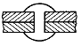
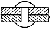
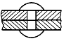
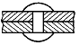
(정답률: 62%)
52. 도면에서 치수 밑에 밑줄을 친 치수가 의미하는 것은?
- 도면의 척도와 치수부분 길이가 비례하지 않는 치수
- 진직도가 정확해야 할 치수
- 가장 기준이 되는 치수
- 참고 치수
(정답률: 40%)
53. KS 나사 표시 방법에서 G 1/2 A로 기입된 기호의 올바른 해석은?
- 가스용 암나사로 인치 단위이다.
- 관용 평행 암나사로 등급이 A 급이다.
- 관용 평행 수나사로 등급이 A 급이다.
- 가스용 수나사로 인치 단위이다.
(정답률: 35%)
54. 보기 입체도를 화살표 방향에서 본 투상도로 올바르게 도시된 것은?
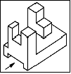
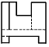
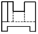
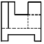
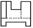
(정답률: 52%)
55. 부품을 스케치할 때 부품 표면에 광명단을 칠한 후 종이에 찍어 실제 모양을 뜨는 방법을 무엇이라 하는가?
- 사진 촬영법
- 프리핸드법
- 프린트법
- 모양뜨기법
(정답률: 46%)
56. 보기와 같은 밑면이 정원인 원뿔을 수직선에 경사지게 절단한 단면에 직각으로 시선을 주었을 때, 절단면의 모양으로 다음 중 가장 적합한 형상은?
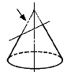
- 3각형
- 동심원
- 타원
- 다각형
(정답률: 58%)
57. KS의 부문별 분류 기호에서 기계분야를 표시하는 기호는?
- A
- B
- C
- D
(정답률: 40%)
58. 도면에서 굵기에 따른 선의 종류가 아닌 것은?
- 아주 굵은 선
- 굵은 선
- 가는 선
- 파선
(정답률: 60%)
59. 다음 용접보조기호는 어떤 용접을 의미하는가?
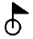
- 현장 용접
- 온 둘레용접
- 온 둘레 현장용접
- 현장 둘레용접
(정답률: 59%)
60. 각각 다른 물체들을 제3각법으로 그린 투상도 중 틀린 부분이 없는 투상도는?
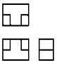
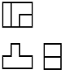
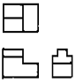
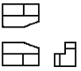
(정답률: 43%)